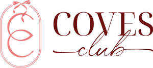

Trade Mark Journal No.2025/013 28 March 2025
UK00004170758 8 March 2025 (35,41)

- Class 35
- Trade promotional services; Conducting, arranging and organizing trade shows and trade fairs for commercial and advertising purposes; Planning and conducting of trade fairs, exhibitions and presentations for economic or advertising purposes; Sales promotion services; Sales promotion; Publicity and sales promotion services; Planning and conducting of trade fairs, exhibitions and presentations for commercial or advertising purposes; Promotion [advertising] of business; Sales promotion services for third parties; Advertising, marketing and promotion services; Business promotion; Sales promotion for others; Organization of events, exhibitions, fairs and shows for commercial, promotional and advertising purposes; Promotion of goods and services through sponsorship; Administration of sales and promotional incentive schemes; Sales promotion through customer loyalty programs; Administration of sales promotion incentive programs; Promoting the sale of goods and services of others through promotional events; Marketing, advertising, and promotional services; Promotion of goods through influencers; Promotion of special events; Promotion, advertising and marketing of on-line websites; Promoting and conducting trade shows; Customer club services, for commercial, promotional and/or advertising purposes; Customer loyalty services for commercial, promotional and/or advertising purposes; Organisation of customer loyalty programs for commercial, promotional or advertising purposes; Promotional marketing; Administration of loyalty rewards programmes; Administration of loyalty rewards programs; Loyalty, incentive and bonus program services; Organisation and management of business incentive and loyalty schemes; Promoting the goods and services of others by means of a loyalty rewards card scheme; Management of customer loyalty, incentive or promotional schemes; Administration of loyalty programs involving discounts or incentives; Administration of a discount program for enabling participants to obtain discounts on goods and services through use of a discount membership card; Administration of customer loyalty and incentive schemes; Administration of loyalty and incentive schemes; Organisation, operation and supervision of loyalty and incentive schemes; Organization, operation and supervision of loyalty and incentive schemes; Organisation and management of customer loyalty programs; Online retail store services relating to clothing; Online retail store services in relation to clothing; Organisation, operation and supervision of loyalty schemes and incentive schemes; Loyalty scheme services; Administration of membership schemes; Organisation, operation and supervision of an incentive scheme; Organisation, operation and supervision of sales and promotional incentive schemes; Organisation, operation and supervision of customer loyalty schemes; Administration of incentive award programs to promote the sale of the goods and services of others; Promoting the goods and services of others through discount card programs; Prize draws (Organising of -) for promotional purposes; Prize draws (Organising of -) for advertising purposes; Sales promotion for others by means of privileged user cards; Administration of consumer loyalty programs; Administration of contests for advertising purpose; On-line promotion of computer networks and websites; Computerised business promotion; Advertising and promotion services; Administration of competitions for advertising purposes; On-line advertising and marketing services; Organization, operation and supervision of sales and promotional incentive schemes; Advertising, including on-line advertising on a computer network.
- Class 41
- Fan club services; Fan club services (entertainment); Entertainment club services; Social club services for entertainment purposes; Organization of entertainment competitions; Organisation of entertainment competitions; Organisation of quizzes, games and competitions; Organisation of competitions and awards; Organisation of competitions [education or entertainment]; Organisation of competitions (education or entertainment); Play schemes [entertainment/education]; Prize draws [lotteries]; Entertainment services in the nature of contests; Lotteries (Conducting -); Organization of lotteries; Conducting of competitions on the Internet; Lotteries (Operating of -); Arranging of competitions via the Internet; Entertainment services relating to competitions; On-line entertainment; Organising and conducting lotteries; Organising of games and competitions; Arranging of competitions for education or entertainment; Club services [entertainment]; Club education services; Provision of club entertainment services; Organisation of games and competitions; Organisation of competitions.
Coves Club Pty Ltd
Coves Club Pty Ltd